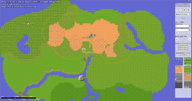

ben (a) benleskey (o) com.I study Computer Science at Mount Vernon Nazarene University, graduating Spring 2023. My academic e-mail address is benleskey (a) mvnu (o) edu. I've lab assisted for the computer science department, tutored fellow students in computer science, and led the creative writing club.
This website is a simple & clean structure to publish my portfolio, blog, links, and other hypertext. See website news.
 I'm developing a map making application (see news) for authors and storytellers and people who can't draw. It could be used by fantasy authors to plan their worlds, RPG players to keep track of their games, or just for fun! I began development as part of my Senior Honors project at MVNU.
IFIV is a toy project to illustrate the complexity of supply chains. It provides an interactive display of products, industries, and transport methods in an interconnected web.
My most complex Minetest project is the Aurum game, an experimental minecraft-style game mostly from scratch using the minetest engine.
 The most well-developed mod I've written is the Elevator mod, which adds a realtime elevator for pretty and fast vertical travel.
The most well-developed mod I've written is the Elevator mod, which adds a realtime elevator for pretty and fast vertical travel.
I've written more mods of varying levels of development, which are all contained within the Tigris-MT project.
I've made forays into the world of Battle for Wesnoth content development, writing some simple campaigns and---most usefully---developing the Wexlfu shared library of useful markup, code, and data to save reuse between my campaigns.
I wrote a DCSS roguelike configuration compiler system to support my own configuration file for the game, but it is easily extensible and reusable for building any DCSS rc file. I include a compilation system as well as a library of useful lua methods and workarounds.
I've tutored for many computer science classes at MVNU, including Computer Science I & II, Data Structures and Algorithms, Database Systems, and Computer Networks and Telecommunications. As a peer tutor, I have worked closely with students who wanted to improve their understanding of these classes and concepts. Each student learns in their own way, and I have mentored students to successfully develop their own learning habits. I have worked with students through difficult material, showing them how to read, manage, and apply knowledge. Besides Computer Science, I have tutored for a Theology course and Mathematics course. Many learning habits carry over between subjects and fields!
I've worked as a Computer Science lab assistant at MVNU for three semesters. I've helped many students in both Computer Science I and II to grasp concepts and develop their programming problem solving skills. In this position, I have troubleshooted technical issues in development tools and workstations, explained concepts to students, mentored students through the learning process, debugged esoteric errors, and helped students succeed in the computer science program.
As part of my Introduction to Software Engineering class, my team and I developed a mobile app using Flutter to digitize part of the Community Emergency Response Team workflow to evaluate disaster preparedness. The software was built for Dr. Hicks of the emergency management department, who provided system requirements.
For my Database Systems class I worked with a team of my fellow students to develop a "Kindness Scanner" for my team member's church. The scanner tracks acts of kindness through QR card scanning and a pay-it-forward system. We designed a PostgreSQL database and built a PHP-based web app to track the acts of kindness.
{kind=link}